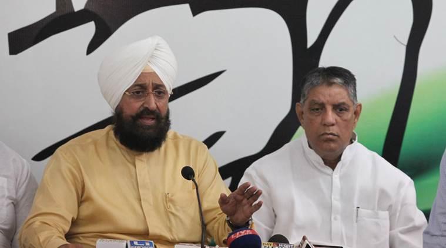

Punjab Pradesh Congress Committee President Partap Singh Bajwa (right). (Source: Express photo)After dithering for long, the Congress central leadership has given in to pressure from its former chief minister, Captain Amarinder Singh, on a leadership change in Punjab. State Congress chief Partap Singh Bajwa and legislature party leader Sunil Jakhar resigned from their posts on Thursday, at the direction of the high command, to enable an elaborate reshuffle a year ahead of the assembly elections.
Singh, also a former PCC chief, has been spearheading a rebellion against Bajwa — who was appointed by party vice-president Rahul Gandhi . Singh even hinted that he could leave the party and float a separate outfit if he was not made the state party chief. Sources said the party would appoint him as the next PCC chief, and a Dalit MLA could become the CLP leader.
Watch video: (App users click here)
According to sources, the frontrunners for the post of CLP leader are Nabha MLA Sadhu Singh Dharamsot and Chamkaur Sahib MLA Charanjit Singh Channi. Sources said AICC general secretary Ambika Soni could head the party’s campaign committee for the assembly elections due in January 2017, keeping in mind the caste equations.
AICC general secretary in charge of Punjab Shakeel Ahmed said the resignations of Bajwa and Jakhar had been accepted by Congress president Sonia Gandhi and their replacements would be announced soon. Singh is learnt to have proposed Dharamsot as the CLP leader.
The issue of a leadership change in the party’s Punjab unit has been on the discussion table for long. While the high command had agreed to replace Bajwa, it was not ready to hand over the reins to Singh.
Rahul was reluctant to appoint Singh, the argument being that caving in to such pressure tactics would set a precedent and trigger similar demands in other states. Another argument was that Singh had led the party to defeat, both in 2007 and 2012.
Then there were allegations that Singh’s wife Preneet Kaur and son Raninder Singh held foreign back accounts.
The fear was that the BJP — as also the AAP which is said to be gaining ground in Punjab — would raise the bogey of black money to target the Congress, leaving it vulnerable. The high command considered many names, including Singh’s nominees like Lal Singh and Jakhar, after it decided to replace Bajwa.
The high command later zeroed in on Soni, but Singh vetoed the move. At one point, Bajwa alleged that Singh was planning to leave the party and float a new outfit called the Punjab Vikas Party. Earlier this week, Singh admitted that Punjab Vikas Party was one of 49 names that were suggested to him, and he could form his own party.
In the face of pressure from Singh, Rahul held meetings with all the MLAs, district party presidents and even municipal leaders to gauge their mood.
He finally chose the path of practical politics and asked Bajwa to step down.